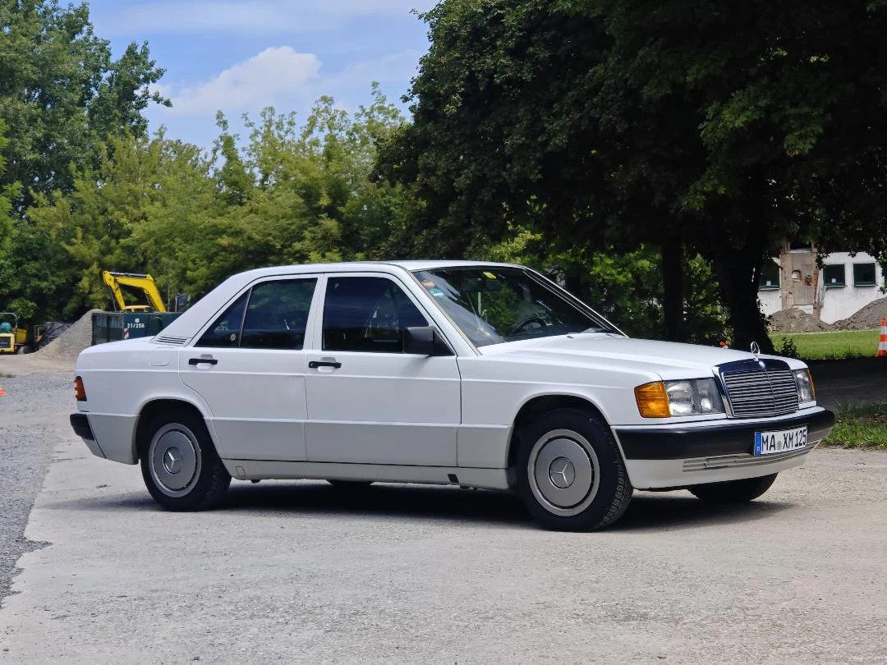
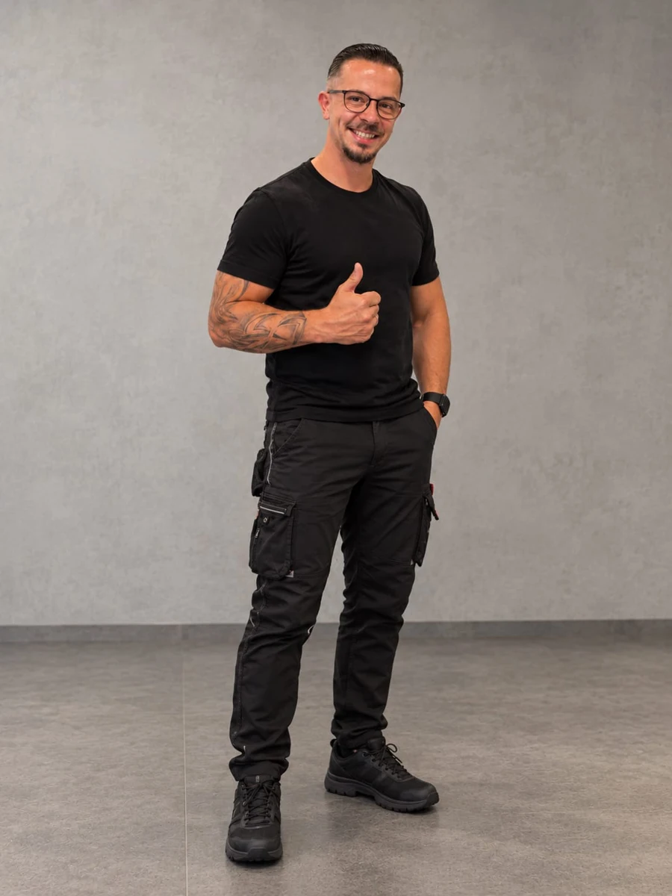

Mannheim · Fahrzeugaufbereitung
Black Magic.
Bis ins Detail.
Sechs Bereiche. Ein Anspruch.
Wähle einen Bereich und entdecke die Arbeit dahinter.

Was den Unterschied macht
Gute Arbeit.
Bis unter die Oberfläche.
Jedes Material braucht seine eigene Behandlung. Entdecke, was hinter einem sauberen Finish steckt.
Das Wissen dahinter
Mehr verstehen.
Den Unterschied sehen.
Was löst den Schmutz? Warum wird Wasser zu Perlen? Die Wirkprinzipien erklärt – die passende Behandlung stimmt Tim auf dein Fahrzeug ab.
AußenwäscheWarum löst Schaum den Schmutz?
Wasser allein kommt gegen einen fettigen Straßenfilm nur begrenzt an. Tenside im Reiniger haben einen wasserliebenden und einen fettliebenden Teil. Sie helfen dem Wasser, die Fläche zu benetzen, und halten gelöste fettige Verschmutzungen in der Flüssigkeit verteilt. So lassen sie sich abspülen.
Der haftende Schaum gibt dem Reiniger Zeit zu arbeiten. Danach werden Schaum und angelöster Schmutz abgespült. Verbleibender Straßenfilm kann eine anschließende Handwäsche erfordern. Mehr Schaum bedeutet dabei nicht automatisch mehr Reinigungskraft.
Für deinen Lack: Erst möglichst viel Schmutz anlösen und abspülen, bevor ein Waschhandschuh die Oberfläche berührt. So liegen weniger lose Partikel zwischen Lack und Handschuh.
Nachlesen: ACI · Reinigungschemie · Koch-Chemie · Snow Foam
FelgenreinigungWas bedeutet die violette Reaktion?
Auf Felgen sammeln sich Straßenfilm und Bremsstaub. Bestimmte reaktive Reiniger reagieren mit den eisenhaltigen Partikeln und bilden wasserlösliche Verbindungen. Je nach Produkt wird diese Reaktion als rote bis violette Verfärbung sichtbar.
Die Farbe ist also eine Reaktion des Reinigers und keine allgemeine „Schmutzfarbe“. Sie zeigt auch nicht, dass bereits jeder Belag entfernt ist. Eine geeignete Bürste unterstützt das Lösen von Rückständen auf Speichen und in Vertiefungen. Erst gründliches Abspülen entfernt Reiniger und gelöste Verschmutzungen.
Für deine Felgen: Chemie, Einwirkzeit und mechanische Unterstützung arbeiten zusammen. Welcher Reiniger passt, hängt auch von der Felgenoberfläche ab.
Nachlesen: CARPRO · Reaktion mit Eisenpartikeln · Koch-Chemie · Wirkprinzip
LackaufbereitungWie verschwinden feine Waschspuren?
Feine Spuren im Klarlack streuen das Licht. Deshalb wirken Reflexionen unruhig und der Lack kann stumpf aussehen. Bei einer abrasiven Politur tragen feine Schleifkörper kontrolliert einen kleinen Teil der obersten Lackschicht ab und gleichen leichte Defekte aus.
Dadurch kann Licht wieder gleichmäßiger reflektiert werden. Das ist eine Bearbeitung der Oberfläche; andere Glanzprodukte können Spuren dagegen vorübergehend auffüllen oder verdecken. Tiefe Kratzer lassen sich nicht beliebig auspolieren, weil nur begrenzt Klarlack vorhanden ist.
Für dein Finish: Ziel ist eine passende Verbesserung des Lackbilds bei möglichst schonendem Abtrag. Was sinnvoll erreichbar ist, zeigt sich bei der Besichtigung.
Nachlesen: Autoglym · Lackkorrektur und Auffüllen im Vergleich
KeramikversiegelungWarum wird Wasser zu Perlen?
Eine hydrophobe, also wasserabweisende Oberfläche wird von Wasser schlechter benetzt. Die Tropfen bleiben stärker zusammen und bilden runde Perlen, statt sich flach auf der Fläche zu verteilen.
Perlenbildung und Ablaufen sind zwei verschiedene Eigenschaften: Erst wenn etwa Neigung und Tropfengröße ausreichen, setzt sich ein Tropfen in Bewegung. Eine stehende Perle allein beweist deshalb noch kein besonders gutes Ablaufverhalten.
Für die Pflege: Eine passende Beschichtung kann das Reinigen erleichtern. Sie ersetzt weder die regelmäßige Wäsche noch macht sie den Lack kratz- oder steinschlagfest. Auch Wasserflecken bleiben möglich.
Nachlesen: Gtechniq · Wasserperlen und Ablaufwinkel · Möglichkeiten und Grenzen einer Beschichtung
LederaufbereitungWarum erst reinigen und dann pflegen?
In der Narbung von Leder können sich Schmutz und Rückstände festsetzen. Ein geeigneter Lederreiniger löst Verschmutzungen an; eine weiche Bürste kann sie aus den Vertiefungen lösen. Ein Tuch nimmt anschließend Schmutz und Reinigerreste auf. Bürsten allein entfernt die Rückstände noch nicht von der Fläche.
Viele Autoleder besitzen eine schützende Farbschicht. Material, Alter und Zustand bestimmen deshalb, welche Reinigung und Pflege passen. Gerade bei perforiertem Leder wird mit wenig Feuchtigkeit gearbeitet.
Für deinen Innenraum: Erst reinigen, damit Pflegemittel keine Verschmutzungen auf der Fläche fixieren. Abgeriebene Farbe oder Risse benötigen eine andere Behandlung als eine reine Reinigung und Pflege.
Nachlesen: Lederzentrum · Autoleder reinigen und pflegen · Reinigungsschaum, Bürste und Tuch
InnenreinigungWie wird der Teppich sauber – und woher kommt das Muster?
Lose Partikel wie Sand, Staub und Krümel werden abgesaugt. Die Düse wird dabei direkt über die Fläche geführt; Ecken, Nähte und Vertiefungen brauchen gezielte Durchgänge. Weitergehende Reinigung richtet sich nach Verschmutzung und Material.
Das Finish-Muster ist keine aufgetragene Farbe: Eine geeignete Teppichbürste legt die sauberen Fasern abwechselnd in unterschiedliche Richtungen. Dadurch reflektieren benachbarte Bahnen das Licht anders und wirken heller oder dunkler. Wie deutlich das Muster wird, hängt vom Teppich und seiner Faserrichtung ab.
Nachlesen: Profi-Anleitung · Teppichfasern bürsten und Muster legen
Einblick in die Arbeit
Details erzählen
die ganze Geschichte.
Vom Innenraum bis zum Lack: Ein stimmiges Ergebnis entsteht durch Sorgfalt an jeder Oberfläche.
Weitere Fahrzeuge auf Instagram

Der Mensch hinter Black Magic
Dein Auto.
In Tims Händen.
Bei Black Magic Detailer sprichst du direkt mit Tim. Gemeinsam schaut ihr euch dein Fahrzeug an und besprecht, welches Ergebnis du dir wünschst.
Der Zustand entscheidet über die passende Aufbereitung. Deshalb gibt es ein individuelles Angebot nach der Besichtigung.
Der nächste Schritt
Erst anschauen.
Dann richtig machen.
Erzähl Tim von deinem Fahrzeug. Deine Angaben werden als vorbereitete WhatsApp-Nachricht geöffnet. Du entscheidest dort, ob du sie absendest.
- Fahrzeug und Wunsch beschreiben
- Besichtigung mit Tim vereinbaren
- Individuelles Angebot erhalten